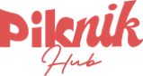
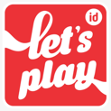

50+ lembaga dan instansi telah menggunakan layanan kami



Platform pelatihan komunikasi dan public speaking bersertifikasi IPSA. Belajar jadi percaya diri, kreatif, dan outstanding dengan metode mentorship dan game-based learning.
Tempat belajar komunikasi dan public speaking yang sudah tersertifikasi IPSA, dengan metode yang fun, sistematis, dan terbukti efektif!
Belajar langsung dengan mentor profesional & berpengalaman di bidang public speaking dan komunikasi.
Sertifikat prestisius dari Indonesia Professional Speaker Association yang menunjang karier dan masa depan.
Dapatkan laporan perkembangan pribadi dan keterampilan komunikasi siswa secara berkala sebagai bahan evaluasi dan apresiasi.
Disusun oleh tim edukasi profesional, kurikulum berbasis praktik nyata & game-based learning.
Program fleksibel yang bisa kamu pilih sesuai waktu, kebutuhan, dan gaya belajar.

Kelas berisi 5–7 siswa dengan harga terjangkau. Belajar sambil diskusi dan bermain.
Kelas 1–2 orang, cocok untuk kamu yang ingin pendampingan personal dan fleksibel waktunya.
(khusus siswa diluar malang)
Belajar di mana saja dengan platform yang sudah terintegrasi
dengan aplikasi SIDIGS.
Program spesial seperti kelas Pageant, TV Anchor, MC Class, dan persiapan lomba nasional.

Pelatihan komunikasi untuk sekolah & perusahaan.
Tersedia kelas dari pra-beginner hingga advance, sesuai usia dan kebutuhan kamu.
Kelas pengembangan kreativitas dan komunikasi ringan untuk anak-anak
Kelas untuk remaja yang ingin lebih percaya diri tampil dan presentasi
Kelas spesifik yang mempelajari skill komunikasi dengan tujuan tertentu
Didukung mentor berprestasi dan berpengalaman di bidang komunikasi, Carabicara memastikan pembelajaran yang berkualitas dan berdampak nyata.

Mereka telah membuktikan bahwa #PintarSajaTidakCukup, komunikasi adalah kunci keberhasilan!
“Senang banget bisa belajar di Carabicara. Mentornya ramah dan kelasnya menyenangkan! Aku jadi juara lomba Storytelling Nasional 2023.”
“Setelah ikut kelas di Carabicara, saya makin percaya diri dan berhasil jadi 3rd Runner Up Miss Teen Star Jawa Timur 2023!”
“Carabicara membantu saya lolos beasiswa LPDP ke Australia. Mentor sangat membimbing dan membuat saya lebih siap tampil.”
Kamu bisa DM ke Instagram @bisacarabicara atau
hubungi Admin di
nomor 0811-9708-700.
Jam kerja Senin – Sabtu 09.00 - 20.00 WIB.
Amankan spot kamu sekarang dan jadi generasi yang tidak hanya pintar, tapi juga komunikatif!